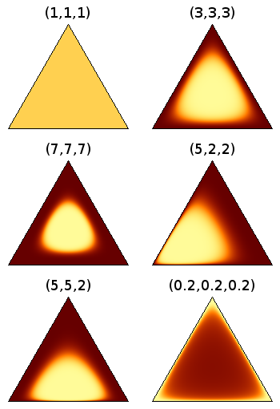

Dirichlet distribution is a conjugate prior of the multinomial distribution. Each sample from Dirichlet distribution $\Mr{Dir}(\alpha_1, \dots, \alpha_K)$ is a $K$-dimensional vector $\pi = (\pi_1, \dots, \pi_K)$ such that $\sum_i \pi_i = 1$.
Properties
Let $\alpha = (\alpha_1, \dots, \alpha_K)$.
If $\pi \sim \Mr{Dir}(\alpha_1, \dots, \alpha_k)$, then $$\prob{\pi\mid\alpha} = \frac{\Gamma(\sum a_j)}{\prod \Gamma(\alpha_j)} \prod_{j=1}^K \pi_j^{\alpha_j - 1} \propto \prod_{j=1}^K \pi_j^{\alpha_j - 1}$$
$\ex[\alpha]{\pi_j} = \alpha_j / (\alpha_1 + \dots + \alpha_K)$
(Agglomeration) If $(\pi_1, \dots, \pi_K) \sim \Mr{Dir}(\alpha_1, \dots, \alpha_K)$, then $$(\pi_1 + \pi_2, \pi_3, \dots, \pi_K) \sim \Mr{Dir}(\alpha_1 + \alpha_2, \alpha_3, \dots, \alpha_K)$$
Dirichlet distribution is a conjugate prior of the multinomial distribution. This can be shown by calculating the posterior $$\begin{align*} \prob{\pi\midd\set{x^{(1)}, \dots, x^{(L)}}, \alpha} &\propto \prob{\pi\mid\alpha}\prob{\set{x^{(1)}, \dots, x^{(L)}}\midd\pi} \\ &\propto \prod_j \pi_j^{\alpha_j - 1} \cdot \prod_j \pi_j^{C_j} \end{align*}$$ where $C_j$ is the number of times we see $j$ among the $x\i$'s. Therefore, $$\pi\mid\set{x^{(1)}, \dots, x^{(L)}} \sim \Mr{Dir}(\alpha_1 + C_1, \dots, \alpha_K + C_K)$$
Intuitions
Visualization of Dirichlet distribution (lighter = higher density):

Note that $\Mr{Dir}(1,1,1)$ is the uniform distribution. We often use $\alpha < 1$ since the distribution will prefer equal-sized clusters.